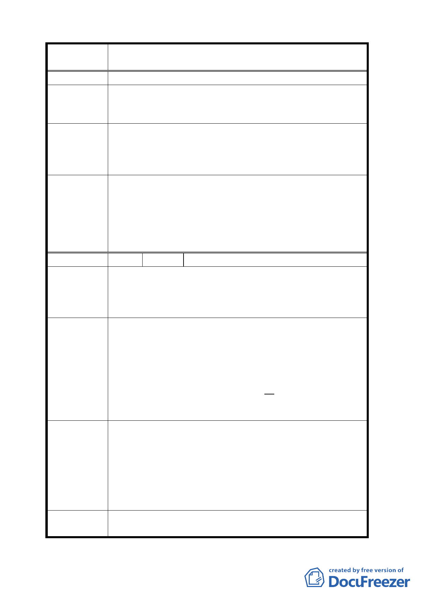

案
名
擬定臺北市中正區齊東街保存區及日式宿舍風貌保
存特定專用區細部計畫案
以保護建築物及植物群落。
專案小組
審查結論
都市設計管制要點中有關圍牆、視覺尺度等，請都市發展
局協助檢視修正。
至於地下開挖部分，請提出說明。
一、 考量本區之特殊建築風貌，同意降低圍牆高度，惟透
發展局回應
空率仍應維持透空 70％以上。
二、 考量本區古蹟及歷史建築保存之重要性，同意臨 53
巷之歷史建物及古蹟基地，以不開挖地下層為原則。
一、依市府所提建築基地內圍牆形貌應與古蹟協調配合
委員會決議
外，其基座在 45 公分以下、高度不得超過 1.8 公尺、
沿街圍牆透空率應達 70％以上為原則，並送都市設計
及土地使用開發許可審議委員會審議。
二、至於地下層開挖部分，同意市府所提以考量植物群落
生長空間，開挖比率不得超過 70％為原則。
編 號 8 陳情人 李天鐸
一、 建築高度影響本區整體建築風貌甚鉅，不應有例外。
陳情理由
二、 保有前院攸關整體優質風貌，應予硬性要求。
三、 為維護本計畫區良好空間感與植物群落生長，地下室
開挖率應予更嚴格限制。
一、 第一點規定，建築物絕對高度以不超過 7 公尺為「原
則」（計至屋脊），建議修正為「建築絕對高度不得超
過 7 公尺」。
建議辦法
二、 第五點地（二）款第二目建議由「臨齊東街 53 巷之
建築基地。於….以維持現況留設前院為原則」改為「臨
齊東街 53 巷之建築基地於….應維持現況留設前院」。
三、 第七點關於地下室開挖率 70％之規定太過寬鬆，建議
修正為不得超過 50％。
建築高度之控制應再配合發展局所建議放寬建蔽率等方式
作整合性研析，請於提送大會審議前，召開工作會議並邀
專案小組
審查結論
請私有地主及府內相關單位，共同討論並充分考量社區參
與提出規劃構想，配合整體風貌之維護。
都市設計管制要點中「無後院與側院退縮限制」，文字引述
不妥，請再檢視並予調整。
至於地下開挖部分，請提出說明。
委員會決議
依本次會議所提修正計畫書及補充資料內容通過。
至於地下層開挖部分，同意市府所提以考量植物群落生長
11